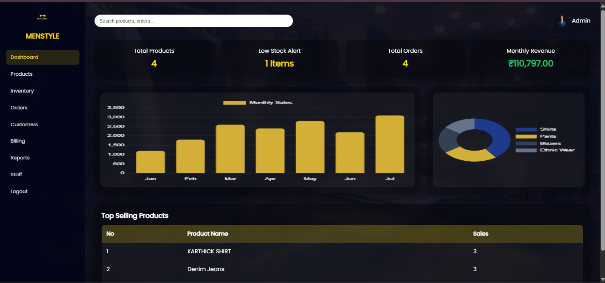

WEB APPLICATION
Textile Management System
Developed a dynamic web-based TMS to manage staff, products, inventory and billing records efficiently.
- Responsive interface using HTML and CSS
- Server-side logic and authentication using PHP
- MySQL database for secure storage and CRUD operations
- Tested and deployed using XAMPP